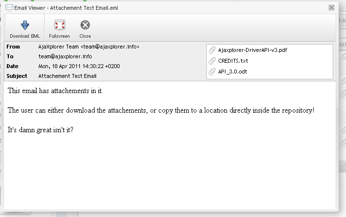

This editors allows you to open an Email Message, either as saved EML file, or directly from a mailbox when inside an access.imap repository. It supports text & html formatting, attachments downloading and copying into another folder or repository.
It will also detect if a given folder contains only EML files, and rearrange the columns accordingly to display email-like columns : to, from, etc..
